Streetwearowe Marki
OFF-WHITE

Uwielbiana przez celebrytów od Kim Kardashian po Julię Roberts, marka Virgila Abloh (który pełni także rolę dyrektora kreatywnego męskiej linii Louis Vuitton) w dużej mierze odpowiada za wprowadzenie streetwearu do luksusowej mody. Projekty Off-White można zobaczyć na wybiegu podczas paryskiego tygodnia mody i na ulicach Tokio czy Nowego Jorku, noszone przez tzw. hype beasts, czyli osoby kolekcjonujące markowe ubrania i buty. Abloh pracował na swoją pozycję przez wiele lat, najpierw współpracując z Kanye Westem i Fendi. Jego projekty są odważne, wyraziste, przełamują bariery w designie. Pomimo krótkiego stażu na rynku, Off-White już zdążyło zasłużyć na status kultowej marki.
Supreme
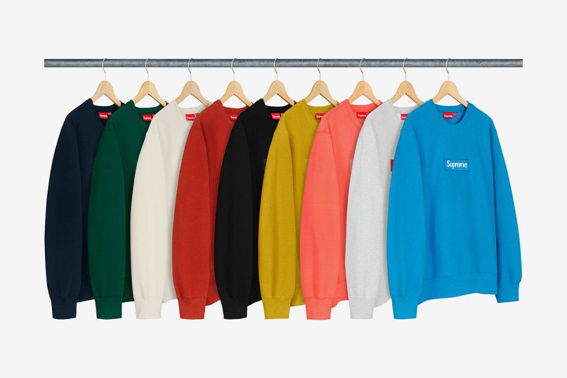
Założona w 1994 roku w Nowym Jorku przez Jamesa Jebbię, skatowa marka zinfiltrowała rynek luksusowej mody, jednocześnie nie zmieniając swojej estetyki. Brand ma na koncie między innymi współpracę z Rolexem i kultową już kolekcję stworzoną z Louis Vuitton, która na rynku wtórnym osiąga ceny znaczenie przewyższające pierwotne sumy, które trzeba było zapłacić za ubrania i gadżety z monogramem LV i logo Supreme. To bez wątpienia najbardziej rozpoznawalna i najbardziej pożądana marka streetwearowa świata. Kolekcje Supreme są zawsze limitowane i sprzedawane wyłącznie za pośrednictwem oficjalnej strony internetowej i kilku stacjonarnych punktów sprzedaży.
BAPE (A Bathing Ape)

W 1993 roku BAPE sprzedawało t-shirty z graficznymi nadrukami. Japońska marka szybko rozwinęła swoją działalność stając się iście lifestylowym brandem produkującym wszystko – od jeansów i kurtek po... zabawki i papier toaletowy. We wczesnych latach 00’ BAPE zyskało ogromną popularność w Stanach, dzięki wsparciu raperów, którzy chętnie pokazywali się w kultowych dziś bluzach z paszczą rekina.
visvim
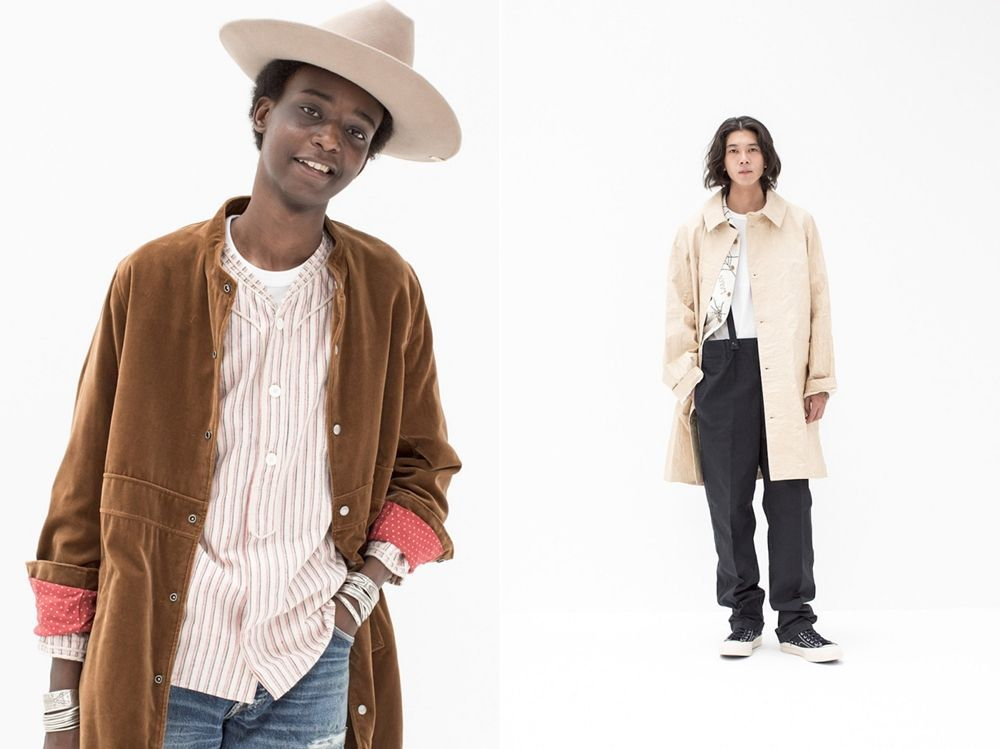
Marka założona przez Hiroki Nakamurę w 2000 roku ma swoich oddanych fanów w Johnie Mayerze i Justinie Timberlake’u. Nakamura zafascynowany różnymi kulturami, które poznawał podczas licznych podróży, postanowił wykorzystywać naturalne metody tworzenia ubrań, takie jak farbowanie jedwabiu, lnu lub angory barwnikami wykonanymi z indygo czy błota. Naturalne materiały łączy z Gore-Texem, aby znaleźć idealną równowagę pomiędzy funkcjonalnością i ponadczasowym designem zagwarantowanym przez tradycyjne techniki.
Stüssy

Prawdopodobnie Supreme nie powstałoby gdyby nie Stüssy. Marka uznawana jest za pierwszy prawdziwy streetwearowy brand, którego skromne początki sięgają roku 1980. Shawn Stussy tworzył wtedy t-shirty z grafikami, które szybko zyskały popularność w skatowym kręgu. 40 lat później jego marka to prawdziwe streetwearowe imperium, którego zmierzch próżno wróżyć, mimo ogromnej konkurencji. Oryginalne projekty, ciekawe grafiki i charakterystyczne logo przyciągają dziś fanów ulicznej mody bardziej kiedykolwiek wcześniej w historii marki.
Fear of God
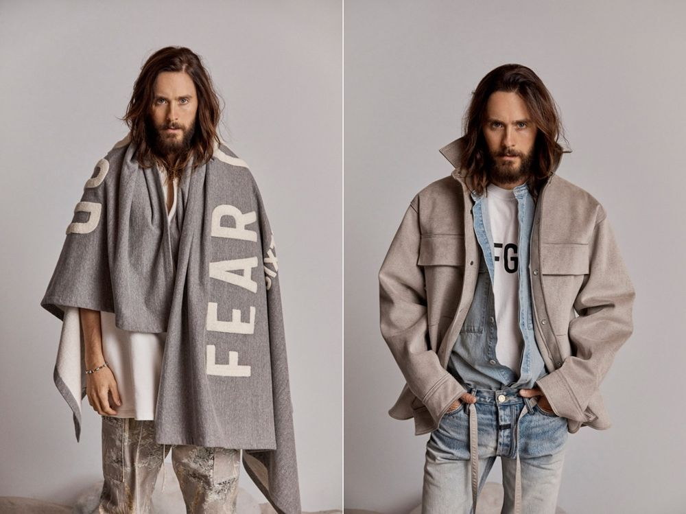
Za marką stoi Jerry Lorenzo. Mimo braku jakiegokolwiek wykształcenia w kierunku projektowania odzieży, udało mu się w stosunkowo krótkim czasie stworzyć jedną z najbardziej intrygujących marek na rynku. Oversizowe projekty z bardzo wyraźnymi motywami graficznymi (np. obszerna peleryna z logo Fear Of God na całej powierzchni) i upodobanie do warstw to znaki charakterystyczne brandu. Lorenzo zaprojektował też swój własny model butów Nike, tworząc zupełnie nową sylwetkę nazwaną Nike Air Fear Of God 1.
Palace
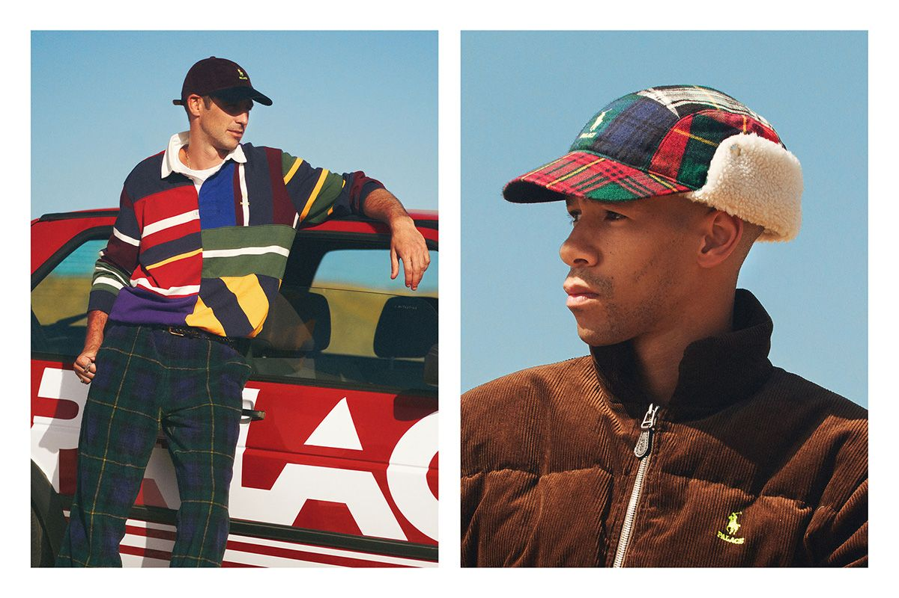
Jedyny reprezentant Wielkiej Brytanii w zestawieniu. Palace powstało w 2010 roku i nie uniknęło porównań do Supreme. W swojej ojczyźnie marka osiągnęła taki sam status jak amerykański brand, stając się obiektem pożądania miłośników streetwearu, którzy wcześniej musieli szukać stylowych ubrań za oceanem. Palace nie ukrywało też inspiracji największymi sportowymi gigantami, takimi jak adidas czy Reebok doprowadzając w rezultacie do współpracy z tymi markami. Ostatnim wielkim przedsięwzięciem brytyjskiej marki jest kolekcja stworzona razem z Polo Ralph Lauren, które podobnie jak linia Supreme x LV, rozeszła się w mgnieniu oka, stając się kolekcjonerskim unikatem.
ACRONYM
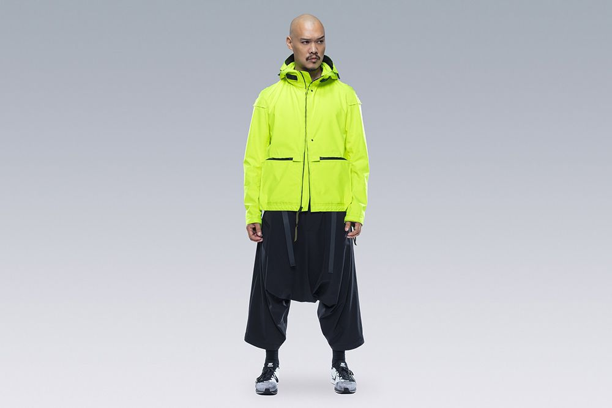
Marka została założona w 1994 roku w Monachium przez Errolsona Hugha i Michaelę Sachenbacher jako niezależne biuro projektowe, skupiając się na łączeniu stylu i technologii w odzieży funkcjonalnej. Marka nie inwestuje w marketing – ich uniwersalne i innowacyjne projekty mówią same za siebie. W 2002 roku magazyn TIME uznał ich Analog MD Clone Jacket za jeden z najfajniejszych wynalazków. Bezkompromisowe podejście do funkcjonalności zwróciło uwagę Nike. Sportowy gigant poprosił Hugh o nadzorowanie produkcji linii ACG (All Conditions Gear).
Kith
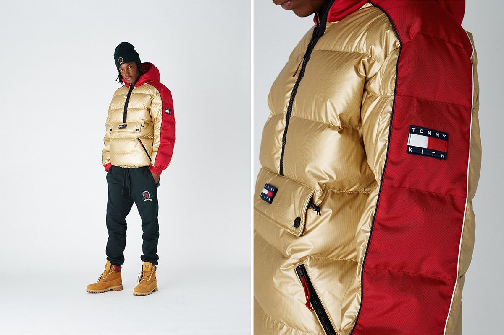
Pomysłodawcą Kith jest Ronnie Fieg. Większość kojarzy nazwę ze ogromnym sklepem, w którym można kupić jedne z najbardziej pożądanych sneakersów świata. Kith to także samodzielna marka, znana ze swoich obficie obrandowanych ubrań, projektów stworzonych z myślą o miejskiej dżungli i limitowanych kolekcji tworzonych we współpracy z nieoczywistymi partnerami. Wśród nich warto wymienić Bugaboo - producenta luksusowych wózków dziecięcych czy Coca-Colę. Niedawno mark nawiązała współpracę z Tommym Hilfigerem.
Vetements
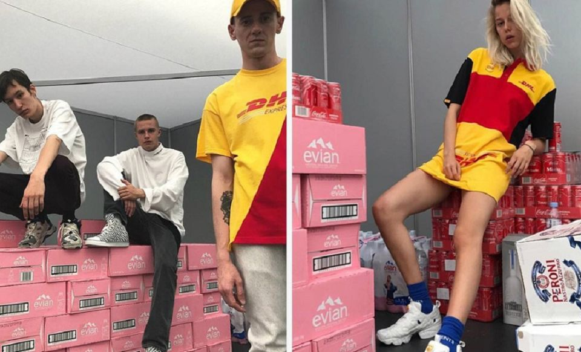
Marka stworzona przez Demnę Gvasalię, to ostateczny dowód na to, że streetwear na dobre przeniknął do mody luksusowej i na odwrót. Pełniąc jednocześnie funkcję dyrektora kreatywnego w domu mody Balenciaga, Gvasalia bawi się konwencją, często używa ironii, zwłaszcza w kampaniach zdjęciowych. Znakiem rozpoznawczym marki jest żółta koszulka z logo DHL, którą kilka sezonów temu chciał mieć każdy, kto śledzi bieżące trendy.
UNDERCOVER
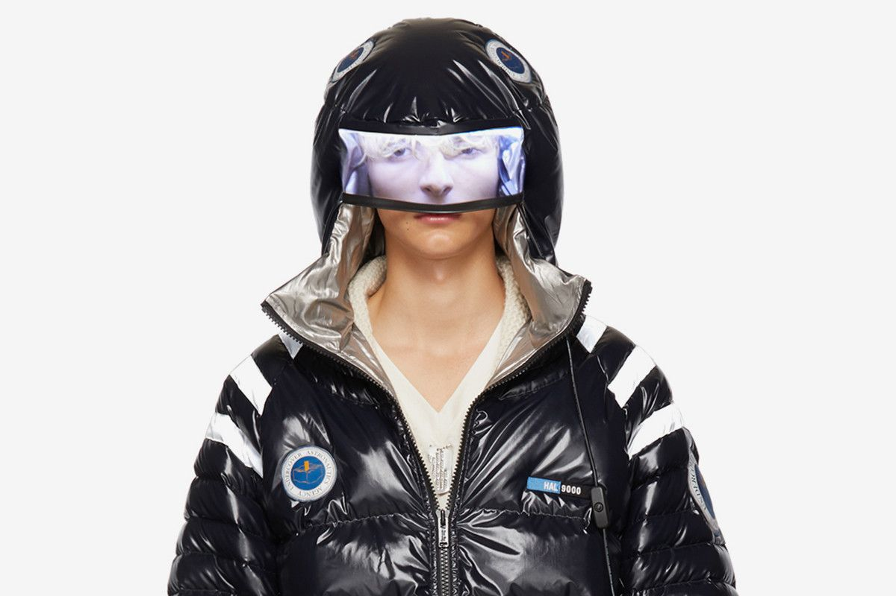
Marka założona przez Juna Takahashiego to uosobienie japońskiego streetwearu. Od prawie 30 lat projekty UNDERCOVER przełamują bariery w designie i mają wpływ na współczesną modę. Wczesne projekty brandu są obecnie jednymi z najbardziej pożądanych i najczęściej poszukiwanych przez kolekcjonerów streetwearu. Estetykę tej japońskiej marki najlepiej oddaje jej własne motto: „We make noise, not clothes” (tł. red.: "Robimy hałas, nie ubrania"). W UNDERCOVER króluje bunt i postmodernistyczna estetyka, które tworzą styl określany jako "street punk".
NEIGHBORHOOD
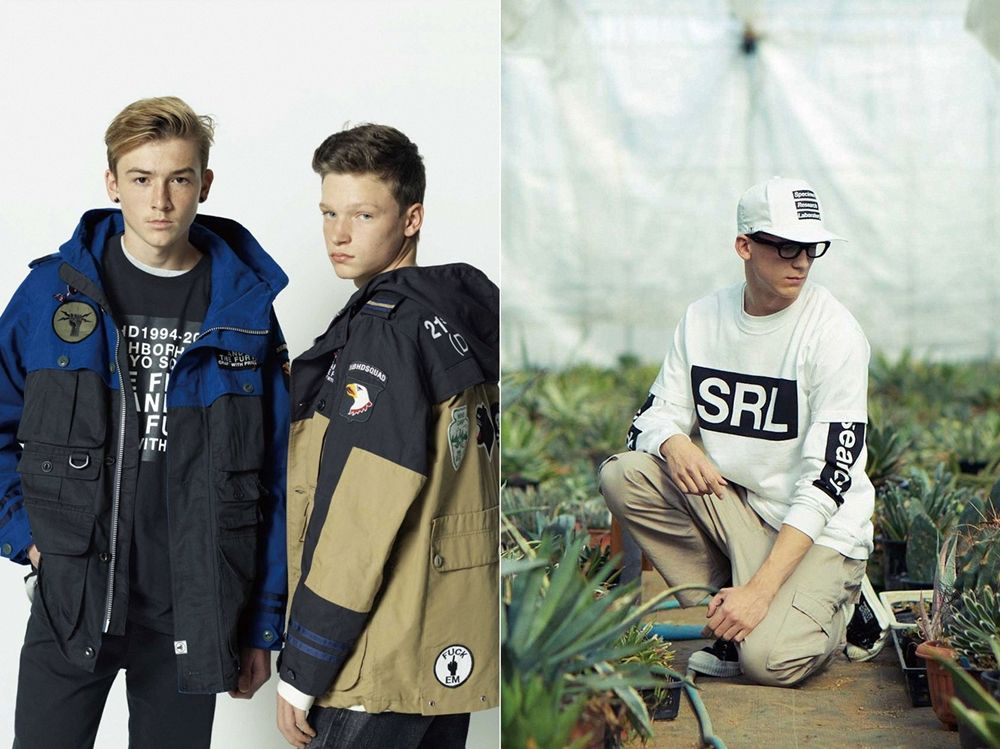
Shinsuke Takizawa (często określany jako Shin) założył NEIGHBORHOOD w 1994 roku. To jedna z tzw. oryginalnych marek japońskiej sceny streetwearowej, która rodziła się w Tokio na początku lat 90. NEIGHBORHOOD czerpie z głębokiej fascynacji Takizawy subkulturą motocyklową. W kolekcjach nie brakuje skór, koszul, flaneli i nakryć głowy, a wszystko to wyraźnie zainspirowane jest stylem gangów motocyklowych.
OBEY
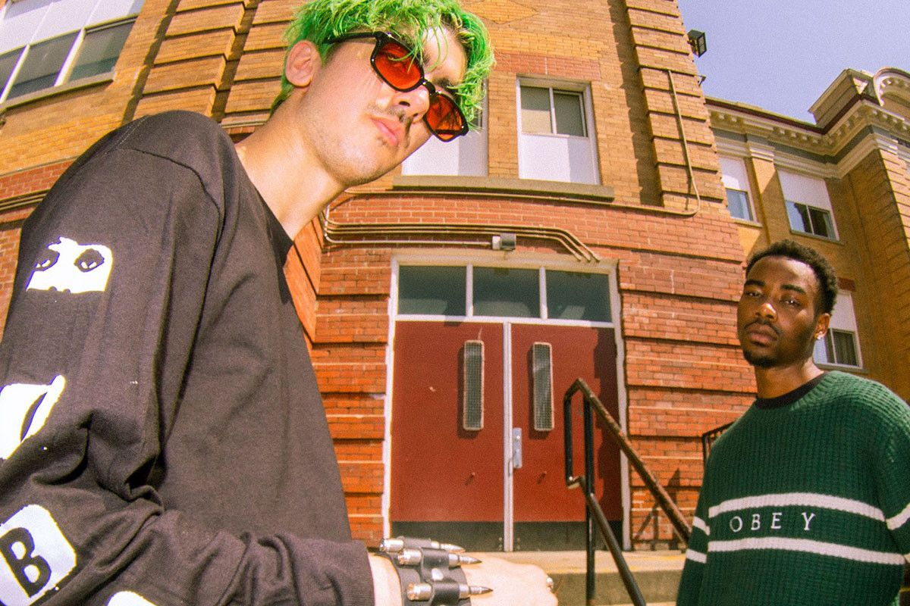
Marka założona przez artystę steetowego, grafika i ilustratora, Sheparda Fairey znana jest - podobnie jak jej twórca - z aktywizmu. Shepard Fairey, założył OBEY w 2001 roku. Marka miała być formą przedłużenie jego działalności artystycznej. Zanany ze swoich populistycznych poglądów Fairey, nie boi się manifestować ich poprzez projekty ubrań, które służą mu jako kolejny rodzaj płótna. OBEY od samego początku cieszyło się popularnością i do dziś utrzymuje swoją silną pozycję na rynku, mimo, że ostatnia kolekcja marki pojawiła się w 2016 roku.
Billionere Boys Club
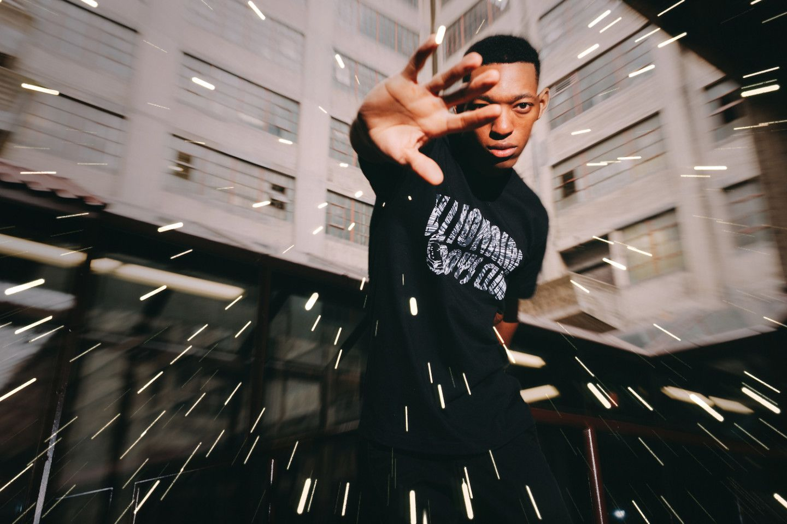
Założony przez Pharrell Williamsa brand szybko zdobył status legendy streetwearu. Ogromna część sukcesu marki to zasługa samej koncepcji. Zanany ze swojej fascynacji kosmosem, Pharrell postanowił wykorzystywać motywy związane z niezbadanym wszechświatem. Udało mu się nawet pozyskać materiały bezpośrednio od NASA. Kolejną inspirację stanowią lata 90. Marka jest zabawna, kolorowa, niepowtarzalna i po prostu cool, tak jak Pharrell. Artysta stworzył także markę Icecream z odzieżą dla kobiet.